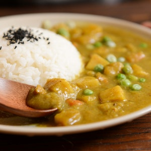

Home
Sambar

Description
A spicy South Indian vegetable stew. Enjoy with rice, roti, or as a soup.
Ingredients
- 6 cups water, or more as needed
- 2 cups toor dal (pigeon peas)
- 1 onion, chopped
- 1 tomato, chopped
- 1 cup peeled, chopped pumpkin
- 1 cup chopped okra
- ½ cup peas
- ½ cup sliced red radishes
- 2 tablespoons vegetable oil
- 1 tablespoon mustard seeds
- 6 cloves garlic, sliced
- 4 dried red chilli peppers
- 2 tablespoons dried curry leaves
- 1 tablespoon sambar powder
- ½ cup tamarind pulp
- salt to taste
- 1 pinch red chilli powder
Steps
-
Combine water, toor dal, onion, tomato, pumpkin, okra, peas, and
radishes in a pot. Bring to a boil, reduce heat to low, and cook until
dal, pumpkin, and radishes start to soften, 30 to 40 minutes.
-
Heat oil in a small pan over medium heat and add mustard seeds. Stir in
garlic, red peppers, curry leaves, and sambar powder. Cook until
fragrant, about 5 minutes.
-
Stir seasoned oil mixture into the stew and cook until flavors combine,
25 to 30 minutes more. Stir in tamarind, salt, and red chilli powder.
Source:
All Recipes
Image Credit:
Cats Coming | Pexels
Home